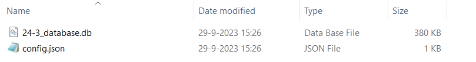

Uitvoeren van veiligheidsrendementberekeningen met de VRTOOL
Opzet van een berekening
Bij een berekening met de veiligheidsrendementmethode kijken we voor een periode van 100 jaar vooruit naar de kosten en baten van dijkversterkingsmaatregelen.
Een veiligheidsrendementberekening bestaat uit 3 stappen, die individueel of gezamenlijk kunnen worden aangeroepen.
Beoordeling/projectie van huidige veiligheid
In deze stap wordt voor de hele geanalyseerde periode de faalkans van het dijktraject bepaald, per vak, per mechanisme. Dit komt dus overeen met de beoordeling + een doorkijk gedurende de analyseperiode.
Doorrekenen van maatregelen per dijkvak
Voor elk dijkvak zijn in de invoerdatabase maatregelen gedefinieerd. Voor elk van deze maatregelen worden kosten en faalkans na versterking bepaald voor de gehele analyseperiode.
Optimalisatie van maatregelen voor dijktraject
Als laatste wordt met behulp van een optimalisatiealgoritme bepaald welke combinatie van maatregelen optimaal is voor het dijktraject. Optimaal betekent hierin dat deze resulteert in minimale totale kosten (investering + overstromingsrisico).
Naast de optimalisatie wordt ook een referentie doorgerekend. Daarbij is het uitgangspunt dat alle dijkvakken op basis van de doorsnede-eisen uit OI2014 voor een planperiode van 50 jaar worden versterkt.

Rekenen met de VRTOOL
De VRTool kan op twee manieren worden gedraaid:
Via het environment van de preprocessor. Deze bevat altijd de laatste VRTOOL release, zie hiervoor de pagina over werken met de preprocessor.
Door de VRTOOL als aparte package te installeren.
In beide gevallen kan de VRTool daarna worden aangeroepen met de CLI van Anaconda en de volgende commando:
python -m vrtool {desired_run} {MODEL_DIRECTORY}
Vervang {desired_run} met de gewenste berekening. Hierbij kan worden gekozen voor één van de drie stappen van de veiligheidsrendementberekning of alle drie tegelijk:
assessment: hiermee wordt alleen de beoordeling/projectie van de huidige veiligheid uitgevoerdmeasures: hiermee worden de maatregelen per dijkvak doorgerekendoptimization: hiermee wordt alleen de optimalisatie van maatregelen voor dijktrajecten uitgevoerdrun_full: hiermee worden alle drie de stappen doorgerekend
Vervang {MODEL_DIRECTORY} met het path naar de database (.db) en config bestand (.json) uit de preprocessor, zie foto hieronder. Beide bestanden worden automatisch gegenereerd via de preprocessor, zie Genereren database.

Belangrijke instellingen
Dit aanvullen na afronding van issue VRTOOL-261.*
Advies werkwijze
Draai eerst assessment workflow en controleer de invoer voor de beoordeling + projectie.
Draai daarna de run_full workflow: dan wordt het hele traject doorgerekend met maatregelen in 2025 (en 2045 (nog bekijken voor v0.1)).
Laad de database met resultaten in het dashboard en werk hierin verder. Met het dashboard kunnen (vanaf versie 0.1) nieuwe optimalisaties worden uitgevoerd.
Beoordelen van resultaten
Vullen we later aan: * Hoe herken je een lokaal optimum? (a.d.h.v. investeringspad wat ‘blijft hangen’) * Is de betrouwbaarheid van maatregelen realistisch?